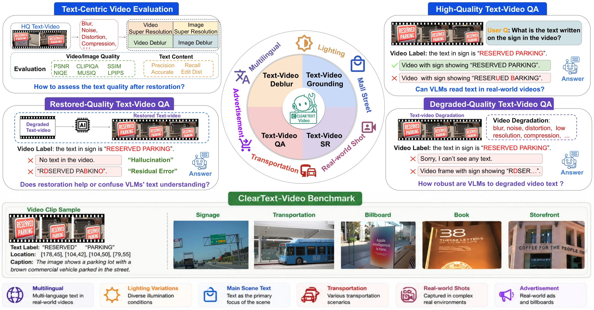
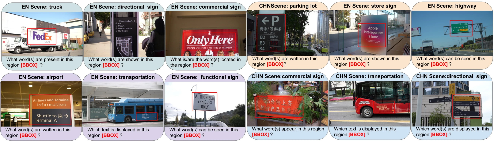
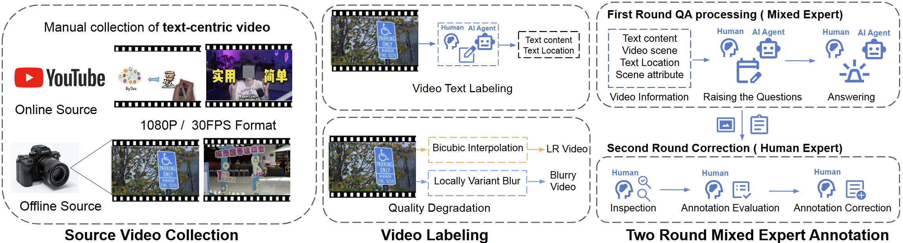
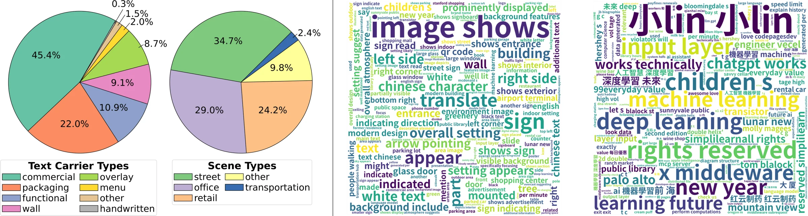
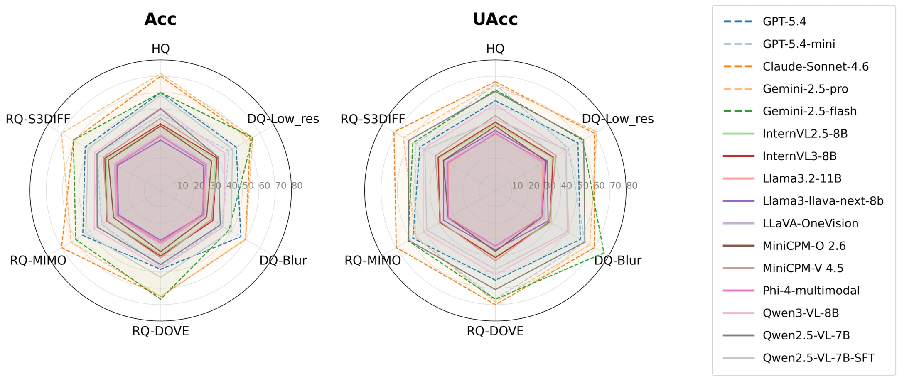
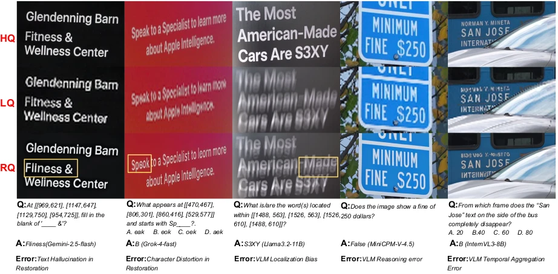
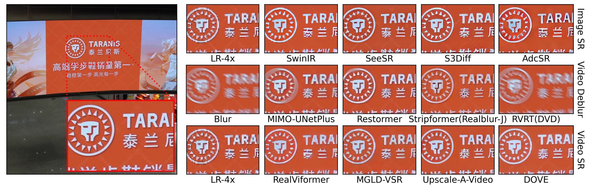

Source videos
Real-world, text-rich egocentric clips from offline and online sources.
A Large-Scale Text-Centric Video Dataset Bridging Video Restoration and Scene-Text Enhancement
A quality-controlled benchmark that connects video restoration with the harder question: can multimodal models still read and reason about the same text when video quality changes?

Why ClearText-Video
Real-world videos contain motion blur, compression, noise and low-resolution text. ClearText-Video makes those changes measurable by pairing every high-quality source with content-matched degraded and restored variants.
It unifies two task families—Text-Centric Video Restoration and Multi-Quality VideoQA—so perceptual enhancement can be evaluated alongside text fidelity and downstream reasoning.
Does a video that looks better also preserve the textual evidence a multimodal model needs?
Dataset & tasks
Chinese and English scene text captured in real indoor and outdoor environments, with aligned quality variants and two rounds of expert verification.
Real-world, text-rich egocentric clips from offline and online sources.
Text boxes, transcripts, captions and QA reviewed in two rounds.
HQ originals paired with controlled degradations and restored outputs.
Spatial and temporal questions test reading, grounding and reasoning.
Public release scope: the Hugging Face release currently provides GT, blur and downsample_x4. Full-paper RQ variants are evaluation conditions reported in the paper.


Large-scale supervision for restoration-aware and quality-robust model development.
74% offline / 26% online, with balanced Chinese and English coverage by source.
Easy, medium and hard questions for controlled difficulty analysis.

Benchmark
ClearText-Video evaluates visual quality, text fidelity and multimodal reasoning together instead of treating restoration as an endpoint.

Across 16 MLLMs, spatial accuracy drops 6.05 points under blur versus 3.14 points under low resolution.
Gemini-2.5-pro leads high-quality spatial VideoQA and also leads DQ-Low_res and RQ-S3DIFF.
Claude-Sonnet-4.6 ranks first across all five temporal quality conditions.
Qwen2.5-VL-7B-SFT gains 6.31–10.11 points over its base model, while accuracy and uncertainty-aware reliability do not always move together.
| Condition | Best model | Acc |
|---|---|---|
| HQ | Gemini-2.5-pro | 71.67 |
| DQ-Low_res | Gemini-2.5-pro | 65.00 |
| DQ-Blur | Claude-Sonnet-4.6 | 60.00 |
| RQ-DOVE | Gemini-2.5-flash | 66.67 |
| RQ-MIMO | Claude-Sonnet-4.6 | 70.00 |
| RQ-S3DIFF | Gemini-2.5-pro | 70.00 |
| Condition | Accuracy |
|---|---|
| HQ | 60.02 |
| DQ-Blur | 59.45 |
| RQ-MIMO | 59.34 |
| RQ-S3DIFF | 58.88 |
| RQ-DOVE | 60.37 |
Failure modes
Perceptual enhancement can introduce residual character errors or hallucinations that change the evidence used for downstream answers.

Qualitative restoration

Resources
Paper, public data and reproducible evaluation code are collected here.
Citation
@inproceedings{li2026cleartextvideo,
title = {ClearText-Video: A Large-Scale Text-Centric Video Dataset
Bridging Video Restoration and Scene-Text Enhancement},
author = {Li, Jinlong and Ding, Jiaming and Lu, Dingfu and Hsiu, Malcolm
and Ke, Chuang and Yang, Kangning and Guan, Bochen and Fu, Lan
and Cai, Jie and Sun, Huiming and Meng, Zibo},
booktitle = {European Conference on Computer Vision},
year = {2026}
}